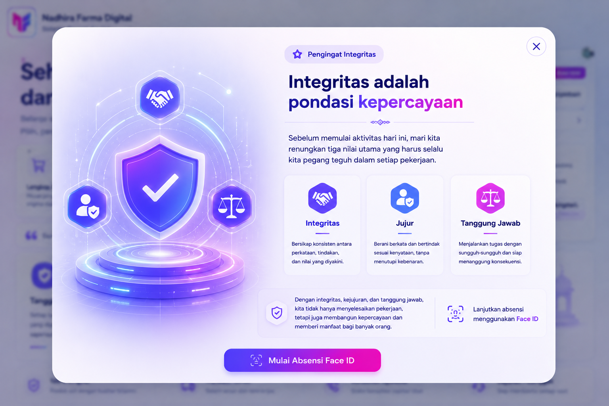

--:-- WIB
Model disiapkan
GPS disiapkan
Menyiapkan kamera dan Face ID...
Menyiapkan kamera dan Face ID...
Absensi Face ID belum bisa dilanjutkan karena data akun profil masih belum lengkap.
Lengkapi Profil